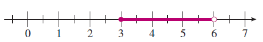
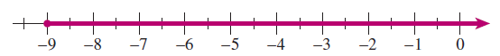
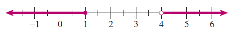
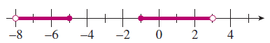
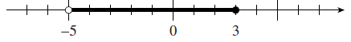
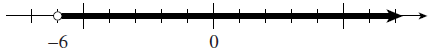
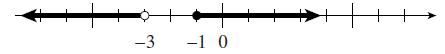
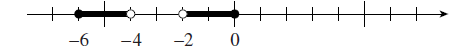

Section 2.5 Section 2.5 The Absolute Value Function
Subsection 1. Use interval notation
Subsubsection Example
Example 2.49.
Write each set with interval notation, and graph the set on a number line.
- \(\displaystyle 3 \le x \lt 6\)
- \(\displaystyle x \ge -9\)
- \(\displaystyle x \le 1~\text{or}~x\gt 4\)
- \(\displaystyle -8 \lt x \le 5~\text{or}~-1\le x \lt 3\)
-
\([3,6).\) This is called a half-open or half-closed interval. A square bracket indicates that the end-point is included; a round bracket that it is not included.
 -
\([-9, \infty).\) We use round brackets next to the symbol \(\infty\) because \(\infty\) is not a specific number and is not included in the set.
 -
\((-\infty,1] \cup (4, \infty).\) The word “or” describes the union of two sets. The symbol \(~\cup~\) is used for union.
 -
\(\displaystyle (-8,-5] \cup [-1,3).\)

Subsubsection Exercise
Notebook 2.50.
Write each set with interval notation, and graph the set on a number line.
- \(\displaystyle -5 \lt x \le 3\)
- \(\displaystyle -6 \lt x \lt \infty\)
- \(\displaystyle x \lt -3 ~\text{or}~ x\ge -1\)
- \(\displaystyle -6 \le x \lt-4 ~\text{or}~ -2 \lt x \le 0\)
- \((-5,-3]\) 
- \((-6, \infty)\) 
- \((-\infty,-3) \cup [-1,\infty)\) 
- \([-6,-4) \cup (-2,0]\) 
Subsection 2. Solve compound inequalities
Subsubsection Example
Example 2.51.
Solve the inequality \(~-3 \lt 2x-5 \le 6~\) and write your solution with interval notation.
To isolate \(x\text{,}\) we first add 5 on each side of the inequality symbols.
The solutions are all real numbers greater than 1 but less than or equal to \(\dfrac{11}{2}\text{.}\) In interval notation, we write \(~(1, \dfrac{11}{2}]\text{.}\)
Subsubsection Exercises
Notebook 2.52.
Solve the inequality \(~23 \gt 9-2b \ge 13~\) and write your solution with interval notation.
Notebook 2.53.
Solve the inequality \(~-8 \le \dfrac{5w+3}{4} \lt -3~\) and write your solution with interval notation.
Subsection 3. Simplify absolute value functions
Subsubsection Example
Example 2.54.
Simplify the function \(~f(x)=|2x-8|~\) as a piecewise defined function.
We use the definition of absolute value to write
Then we simplify each expression.
Subsubsection Exercises
Notebook 2.55.
Simplify the function \(~f(x)=|6-3x|~\) as a piecewise defined function.
Notebook 2.56.
Simplify the function \(~f(x)=|1+4x|~\) as a piecewise defined function.